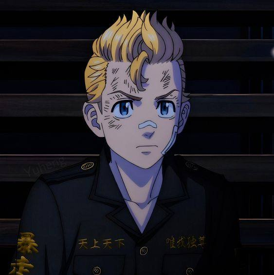
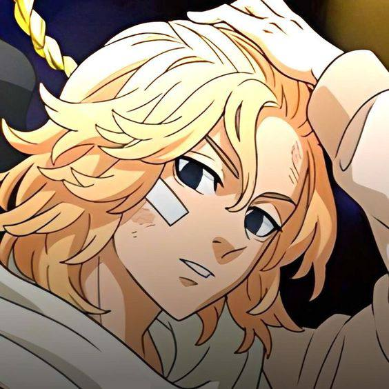
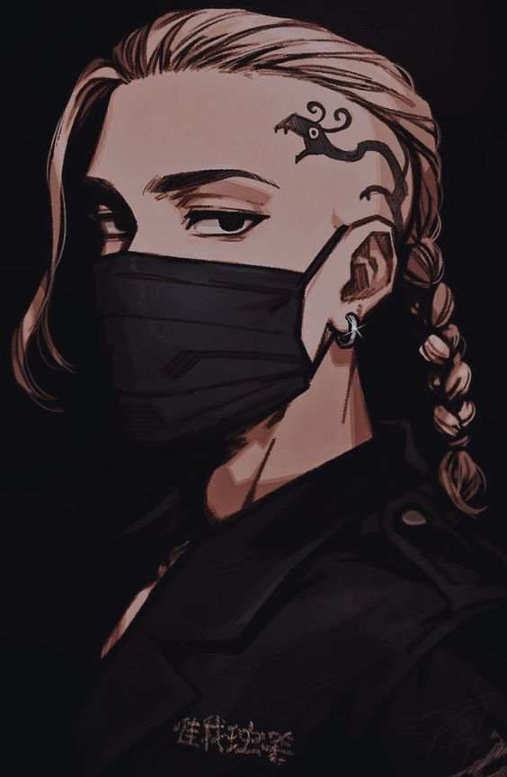
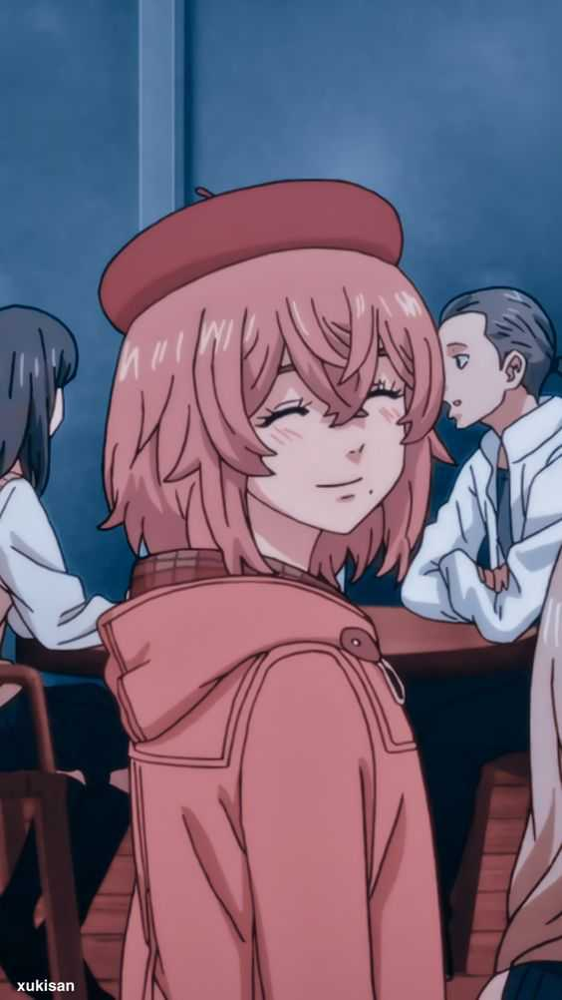
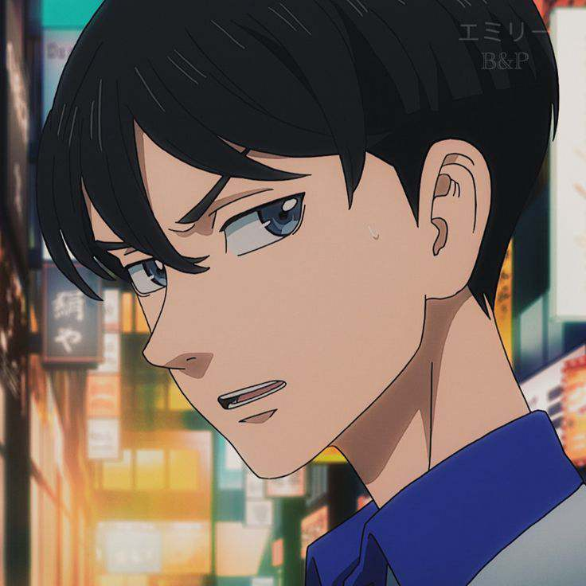
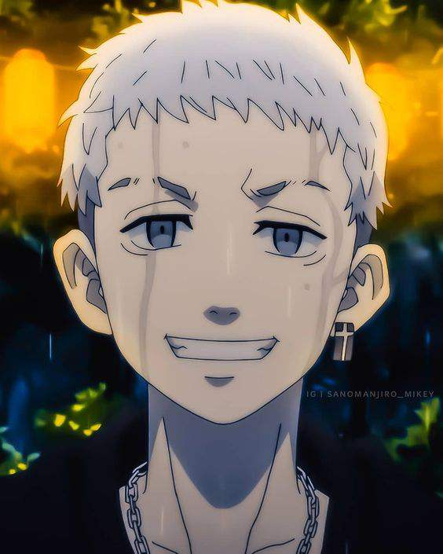
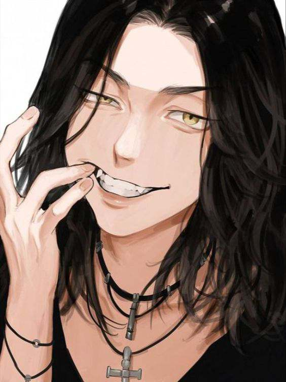

Takemichi is the protagonist of the series. He is a 26-year-old office worker who travels back in time to his middle school days. He is determined to change the future and save his ex-girlfriend, Hinata Tachibana.
Manjiro Sano (Mikey)

Mikey is the leader of the Tokyo Manji Gang. He is known for his strong sense of justice and loyalty to his gang members. He becomes an important ally to Takemichi.
Ken Ryuguji (Draken)

Draken is another key member of the Tokyo Manji Gang. He is known for his dragon tattoo and is considered one of the toughest delinquents in the city.
Author and Creators
Tokyo Revengers is written and illustrated by Ken Wakui. It was originally serialized in Weekly Shonen Magazine and has gained a large fanbase both in Japan and internationally. The series is also adapted into an anime, directed by Koichi Hatsumi.
CHARACTER
Takemichi Hanagaki
Takemichi is the main protagonist
of Tokyo Revengers.
Manjiro "Mikey" Sano
Leader of the
Tokyo Manji Gang
Ken Ryuguji
Vice-leader of the
Tokyo Manji Gang.
Hinata Tachibana

Takemichi's ex-girlfriend,
pivotal to the story.
Naoto Tachibana

Hinata's younger brother and a
key figure in the story.
Takashi Mitsuya

He is the older brother of Luna and Mana Mitsuya.
Baji Keisuke

is a tall teenager with long, slightly wavy, shoulder-length jet-black hair.